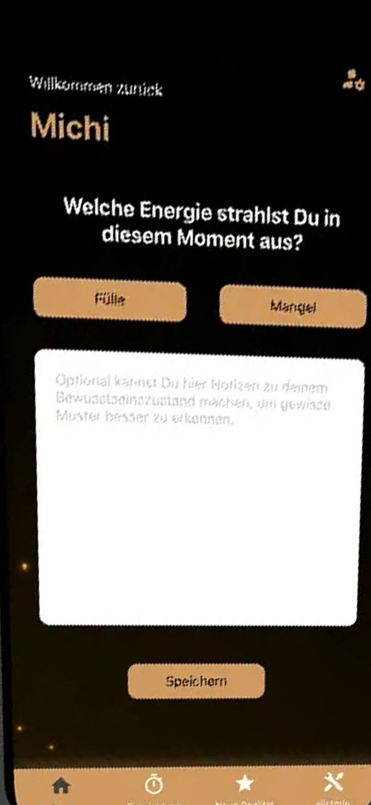

ManifeSTATE App.
Eine App für iOS und Android im Corporate Design – mit 30-Tage-Challenges, Punktesystem und Notizen, die Nutzer täglich beim Manifestieren begleitet.


- Branche
- Coaching & Social Media
- Leistung
- App-Entwicklung
- Plattformen
- iOS & Android
Das Problem: Reichweite ohne tägliche Begleitung
Die App begleitet täglich mit Challenges, Punktesystem und Notizen.
Tobias Herrmann erreicht mit seinen Inhalten rund um Manifestation über 40.000 Menschen auf Social Media.
Was fehlte, war ein Werkzeug, das seine Kunden im Alltag begleitet: täglich, direkt auf dem Smartphone und in seinem eigenen Look.
So hat die App die Begleitung verändert
Was die Community vorher hatte und was sie heute mit der App hat.
-
Täglich dranbleiben
VorherImpulse gab es nur über Beiträge auf Social Media.
HeuteNutzer halten ihren Zustand dreimal täglich in der App fest.
-
Motiviert bleiben
VorherEs gab kein festes Ziel, auf das man hinarbeitet.
Heute30-Tage-Challenges mit Punktesystem geben einen klaren Rahmen.
-
Fortschritt sehen
VorherWas guttut, ging im Alltag verloren.
HeuteNotizen und Rückblick zeigen die eigene Entwicklung.
-
Die Marke erleben
VorherDie Inhalte lebten auf fremden Plattformen.
HeuteEine eigene App im Corporate Design, für iOS und Android.
Was der Kunde davon hat
- Jeden Tag präsent
Die App begleitet die Community täglich, nicht nur beim nächsten Beitrag.
- Eigener Kanal
Tobias Herrmann erreicht seine Kunden direkt, im eigenen Look.
- Bereit zu wachsen
Als Nächstes ist eine Funktion zum Vernetzen mit Freunden geplant.
Dein Projekt könnte das nächste sein.
Erzähl uns von deiner Idee. Im kostenlosen Erstgespräch klären wir, was sich für dein Team verbessern lässt.